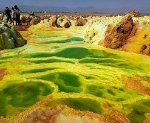

About Denakil Depression
The Danakil Depression, also known as the Afar Depression, is a geological depression in the Afar Triangle. It is part of the East African Rift System, making it a region of significant tectonic activity.
The area is inhabited by the Afar people, who have adapted to the harsh conditions of the region over centuries.
Video
Watch this video to get a glimpse of the Danakil Depression.
Additional Images
 Another view of the breathtaking landscape.
Another view of the breathtaking landscape.

View of the otherworldly colors.
 Local Afar people engaged in traditional salt mining.
Local Afar people engaged in traditional salt mining.